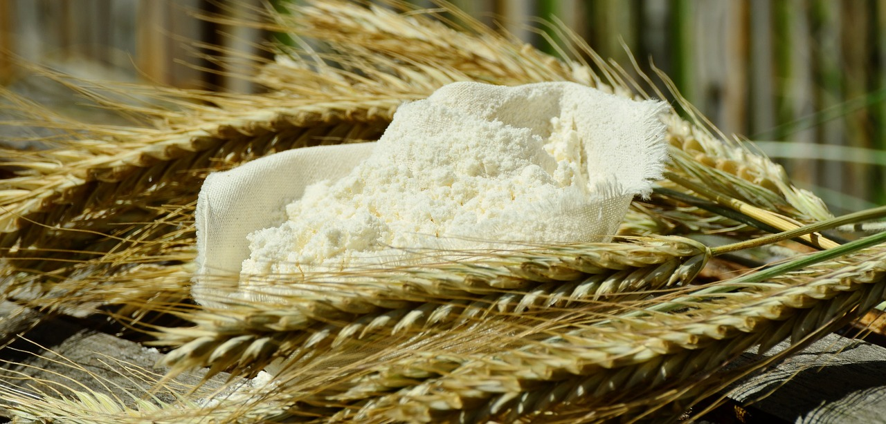
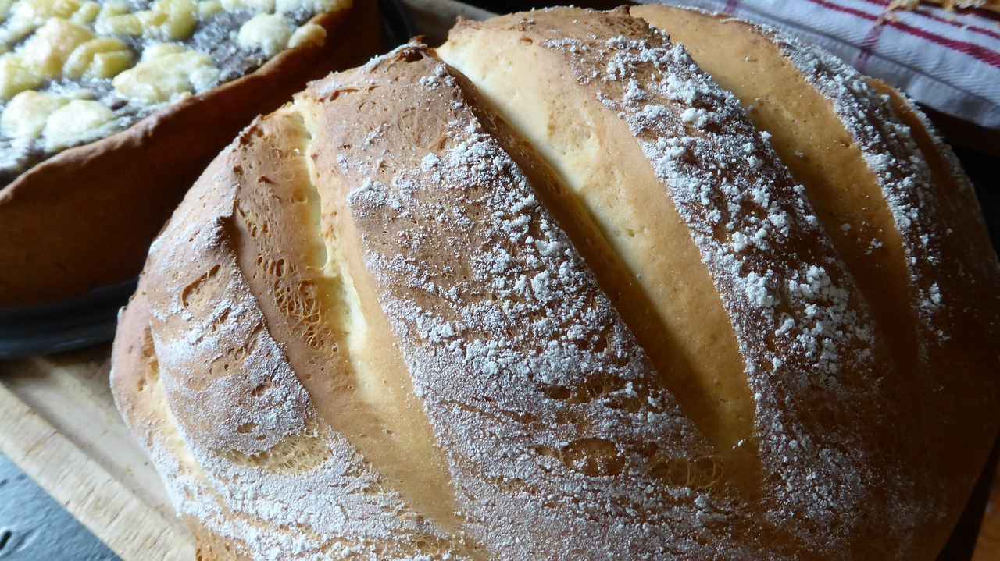

Sugars
Brown Sugar is commonly thought to be more healthy than white sugar. In reality, brown sugar is not that different than white sugar. It's simply white sugar mixed with a coating of molasses. As a result, if your ratio of sugars has more brown than white, any cookies you bake will be more tender. The darker the brown sugar, the more molasses there is in the sugar. This layer of molasses can dry out resulting in brown sugar turning into a hard clump once the vacuum seal on the store packaging is broken due to exposure to air. You can revive the brown sugar once it dries out through several methods. It's possible to take a slice of apple and leave it in a contained of brown sugar for a day or two to revive it but the most common and foolproof method is to use a clay disk. Soak it in water for 15 minutes and leave it in the container with the sugar.
White sugar is crystallized sucrose from sugarcane plants. The plant is boiled down until the moisture evaporates leaving behind the sugar crystals(Carr, n.d. para. 2)1. Other essences that do not evaporate from the sugarcane are left behind as molasses. White sugar assists in keeping moisture in the bake and most of all contributes to the caramelization process of cooking and baking. In baking, white sugar also leads into better crusts on your bakes. White sugar needs to be stored in a dry and cool place. Otherwise, it will absorb water and clump together. More white sugar than brown will make harder cookies.
Next comes confectioner's sugar. It's secondary name, powder sugar, gives away what it is. It's sugar that has been ground into a fine powder. If you don't need large quantities of it kept in your pantry, it can be made at home by grinding it in a blender or food processor. Because powdered sugar is a fine grain, it dissolves quickly in liquids. We typically use it in icings, syrups and as decoration for desserts.
Flours
Flour is a key binding agent in most bakes. The proteins in it form the gluten base for the body of desserts when moisture is introduced. There's many types you can choose from for your bakes. The type you choose will change depending on whether you're baking breads or pastries. For breads, you'll want a flour high in proteins to create a tougher product which you'll get from hard wheats. Pastries want a soft product after baking so they require lower protein contents from soft wheats. In most homes and grocery stores, you'll find all-purpose flour (bleached and bleached), bread flour and cake flour. Joythebaker did an excellent segment on flour in her Baking Bootcamp blog post.
All-purpose is a mixture of both high and low protein wheats. I mentioned that flour can be found bleached and unbleached and these do have slightly different purposes. A bleached flour is flour that has been bleached with the use of chemicals(Foster, 2015)2. The chemical process also strips the flour of some of its proteins which makes this flour more suitable for baking projects such as pie crusts, cookies, quick breads (breads that don't use gluten for rising) and waffles. Unbleached flour is also bleached but instead of through chemicals, it's been allowed to bleach naturally(Foster, 2015)1. Because it was bleached naturally, it's more suited for baking that requires yeast or to rise. You'll find in in recipes for breads and puff pastries such as strudels, yorkshire puddings and puffs.
Meanwhile, bread and cake flour are two opposite ends of the spectrum. Bread flour has very high protein levels to be able to build more gluten for a bake that holds together while cake flour is very low protein so that the desserts will be lighter and crumble.
Some other flours you may find in recipes are:- Almond flour
- Barley flour
- Buckwheat flour
- Pastry flour
- Self-rising flour
- Whole-wheat flour
Always be careful when looking to substitute the flour in a recipe for self-rising flour. This type of flour already contains salt and baking powder so it shouldn't be added to a recipe that calls for those ingredients.
Leavening Agents
Leavening agents are ingredients that cause expansion of doughs and batters by releasing gases during the baking process. Thanks to leavening agents, we have the breads and cakes we commonly eat today rather than just tortillas, naan, and short cakes. Leavening agents include steam, baking powder, baking soda and yeast.
Baking soda and baking powder are two sides of the same coin. Baking soda is a chemical leavening agent that produces carbon dioxide when combined with an acid such as lemon juice, vinegar or molasses(Helmenstine, 2016)3. Or even yogurt and buttermilk. Baking powder is a combination of baking soda, the correct amount of an acid to activate the baking soda and some sort of dry filler. Most baking powders only rise once but you can also find powders that rise twice; once during the wet ingredient stage and again during baking. Also, because baking powder is actually a simple combination of ingredients, you can actually find recipes online to make your own baking powders.
Yeast is a live micro-organism that you add to your bakes to create carbon dioxide and rise. You don't have to worry about eating live bacteria after using yeast to rise your bake. The organism is killed off by the heat of the baking process. How yeast works is a fermentation process (Lawandi, 2015)4. As yeast develops, it ferments/consumes the sugar in the bake which produces carbon dioxide as a by-product causing the doughs to rise. That's why when baking bread, you'll leave it for an hour and find the dough is twice the size it was originally. The more salt your dough contains, the longer it will take to rise.